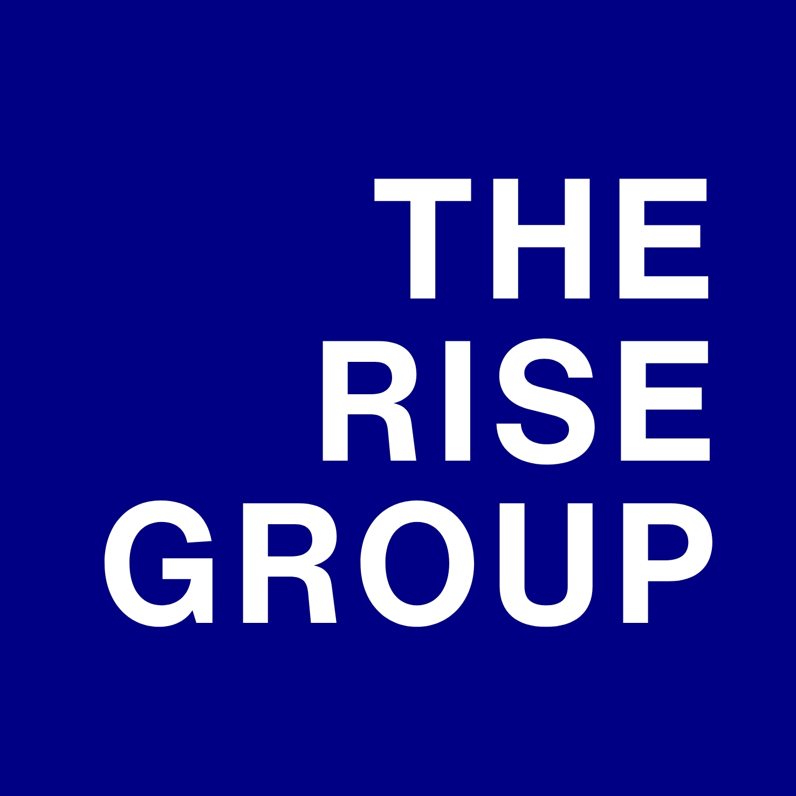
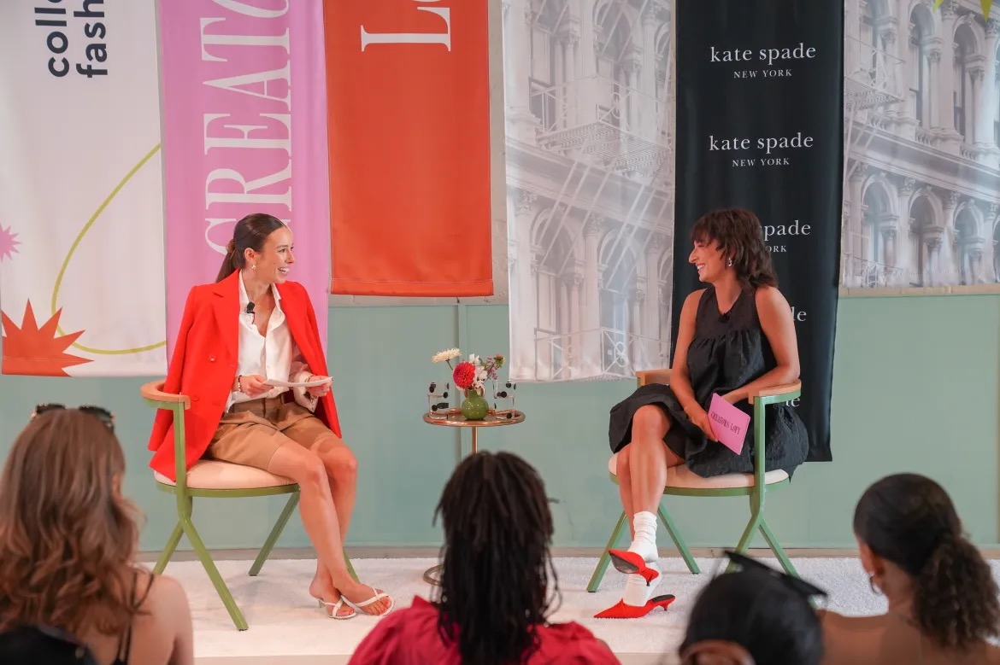

Q&A with Emma Burke, Founder & CEO of The Rise Group
How getting help with her financial roadmap through Qava gave Emma the clarity and confidence to build a thriving creator agency—generating over $1M in sales in her first year, and growing fast.
Behind the Story


We share stories of people who turn ambition into action—hoping to inspire others or offer the practical know-how to do the same. We're especially proud to spotlight female and diverse founders whose journeys reshape what success looks like. This month, we sat down with Emma Burke, Founder & CEO of The Rise Group.
As the creator economy took off in the mid-2000s, Emma saw more than just a trend—she saw a fundamental shift in how brands connect with people. In our interview, Emma shares how she found her place in New York City, the experiences that shaped her growth, and why embracing imperfection is key to building something meaningful.
Without further ado, let's get into it.
Pre-Launch
Q: Let's start with a little bit about yourself — where you're from, what did you study, and what first drew you to the business world?
Sure. I grew up in Philadelphia, and growing up, I gravitated toward communications—TV, magazines, celebrity stories. Especially tastemakers, like Oprah, who brought messages, products and missions to massive audiences. I remember at one point, I wanted to be a red carpet interviewer, like Juliana Ransick. But I'll save that for my next career...
I loved growing up in Philly—visiting museums, exploring the city—and studied Communications at St John's University in New York. To be completely honest, it wasn't school or classes that got me to where I am now. Internships did. Fortunately, my school was in the city, and we were encouraged to go out and find opportunities ourselves. I would send cold emails to people because I wanted to learn from them and figure out my path. That hands-on experience was everything.
Q: What was your early career like before starting The Rise Group?
I tried everything under the communications umbrella—marketing, editorial, fashion PR. One of my first roles was at Diane von Fürstenberg (DVF). I had read her book The Woman I Wanted to Be and watched House of DVF. Working there felt like stepping inside that world—creative, fast. It felt magic to me then.
After that I joined Tory Burch, another brand I had been following. Kate Spade after that. Those early experiences taught me how much energy and storytelling go into great branding. I made great friends and learned so much about myself, business, and how to get things done to a high standard.

Emma & Izzi at Creators Loft 2023
Founding The Rise Group
Q: When did you realize you wanted to start your own business, and what inspired that decision?
There wasn't one single moment—it built up over time. I kept thinking about the future and realized I was looking at people ten years ahead of me who weren't exactly excited about their work anymore. That made me reflect.
At the same time, I was leading influencer partnerships for major brands and working with lots of agencies. I saw how transactional many agents were, focused on hitting monthly quotas instead of the talent (or the brand). I started to think, I could do this better, because I really do care about what the best deal could be, not just another transaction.
When I got serious about starting my own agency, it was terrifying. People were skeptical about me walking away from a steady income. But I knew if I didn't try, I'd regret it. So I gave myself time—served my notice, set up my LLC, got an accountant and lawyer. My kind of business doesn't take much money to start, so I figured: I might not make a ton right away, but at least I won't be burning cash.
It was scary — but my bigger fear was regret.
Q: Tell us about the moment you came up with the idea for The Rise Group. What problem were you seeing that you wanted to solve?
I kept seeing unhappy creators—talented people who were being taken advantage of. They didn't understand the contracts or terms, or they'd get promised things that never came through. I wanted to create a space where being pleasant to work with and being on your talent's side was the norm.
Also, I noticed I had a knack for finding up-and-coming creators. Super talented people who hadn't quite made it yet. I loved being the first-believer in these people, helping to build their confidence and seeing them rise. Of course, that's why I called my agency The Rise Group.
Q: What was the first thing you did to bring that idea to life?
I told people I was going to start an agency. Saying it out loud made it real. Once you put it into the world, there's no turning back—you start owning it, and that builds confidence and momentum.
Emma's Approach
Q: What were the key steps you took early on that shaped the success of The Rise Group?
I broke it down into a few basic steps.
First, I started with discovery — especially on the talent side. I talked to creators about what they wanted and what they felt was missing. That helped me define our value proposition, how we were different from the competition, and who our ideal clients were.
Second, I worked with an MBA student I found on Qava to build a proper financial roadmap. Together, we mapped out exactly how many clients I'd need, the average deal size, and the cadence of projects required to match—and eventually exceed—my old salary. For the first time, I had real clarity and a target I could actually work toward.
While I think of it, I also used Qava to build my P&L and revenue charts, which gave me early visibility into what was working and what wasn't. That insight helped me grow deliberately—not chaotically—so I could scale without burning out, which is where so many people go wrong.
Third, I leveraged my network. I reached out to as many people as possible — past contacts, collaborators, and friends of friends. Putting feelers out there led to my first few clients and gave me early traction.
From there, I built internal processes as the business grew. I never got distracted by things that didn't matter. My focus has always stayed on maximizing value for my talent and brand partners. That's really important to me and my team.
Qava connected me with knowledgeable people that filled finance & strategy blindspots that could have slowed me down.
Q: What did you decide your differentiators were?
Inclusivity, being easy to work with, and focusing on building my talent’s careers both on and off camera. I wanted The Rise Group to feel different — like a true partner, not just a middle layer. We invest in relationships, not just campaigns, and we think long-term about where each creator wants to go.
Q: Are there any projects you’re especially proud of?
One that stands out is our partnership between Bri and Anthropologie on their Adaptive Fashion for Everyone campaign. It was a true 360 project — the brand wanted to build the line around Bri's real-life experiences as someone with a disability. She worked closely with the leadership team to offer guidance and feedback, shot the campaign at their HQ, and of course shared the journey across social. Seeing Bri shine through that collaboration was such a reminder of why I started The Rise Group.

More recently, we've been working with Meta on the launch of their AI glasses. That one was exciting because it blended storytelling, tech, and lifestyle in a way that felt new for us. It pushed us creatively and showed how creators can bridge tech to fashion.
Use Your Strengths
Q: How did you figure out what you’re best at — and what to get help with?
It took some honest reflection. I focused on what energized me and what consistently brought results — that's where I knew I should lean in. At the same time, I looked at the things that drained me or where I just wasn't confident. For me, that was finance and accounting.
Get help early... and often!
Q: What did you do once you identified that gap?
I got help. It's a shame how many people get stuck. Through Qava, I found a great guy who helped me build my financial roadmap — it showed me how many clients I needed and what kind of deal volume would make my business sustainable. It became my compass.
Q: What impact did that have, and what advice would you give others?
The roadmap became crucial — and I actually hit the numbers we modeled almost exactly. It gave me confidence, focus, and a clear sense of direction. I can't say enough how important that is when starting a new venture where everything feels unknown. I've learned to double down on what I'm great at, and not to hesitate to get help with the rest. It's easy on Qava — and it's how you grow faster.
The Impact of AI
Q: With AI dominating the news, I have to ask — how is AI disrupting social media and agency work?
AI is completely reshaping how agencies and creators operate. It's taking a lot of the repetitive, time-consuming work off our plates, meaning we can spend more time on strategy, storytelling, and creativity — the parts that truly connect with people.
At the same time, it's raising the bar for quality. When everyone has access to the same tools, originality and authenticity become the real differentiators. The agencies that thrive won't be the ones using the most AI — they'll be the ones using it thoughtfully, to amplify human insight and creativity rather than replace it.
Q: What advice would you give other founders navigating AI right now?
Experiment, but don’t outsource your voice. Use AI to speed things up, not to define who you are. The brands that stand out in this new era will be the ones that use technology with purpose — blending efficiency with empathy. That’s what audiences connect to.
Advice & The Future
Q: For someone looking to start an agency or consulting firm, what advice would you share?
Don't overthink—just start. Everything is iterative. The perfect Instagram feed or website shouldn't hold up your progress.
Listen to your clients—let them shape your value proposition. And know your gaps. You won't be great at everything, but you can find people who are—whether that's on Qava or through your own network.
Don't wait for perfect — start, learn, and keep going.
Q: What's next for The Rise Group? What kind of projects are you most excited about?
I want to keep investing in the talent we already have—helping creators build long-term, sustainable careers. I'm passionate about discovering rising stars and being more involved as a thought leader in the creator economy. I'm also speaking at St. John's soon to encourage students to take risks of their own.
Turn ideas into something.
The Rise Group continues to grow because Emma built smart.
Start your journey today with Qava.